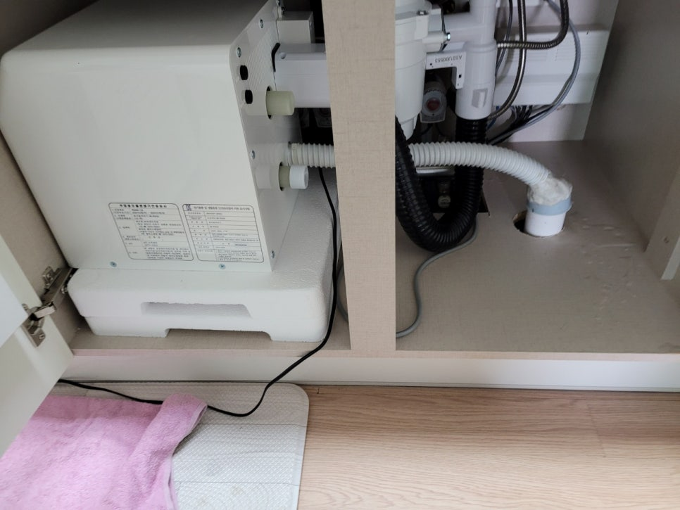
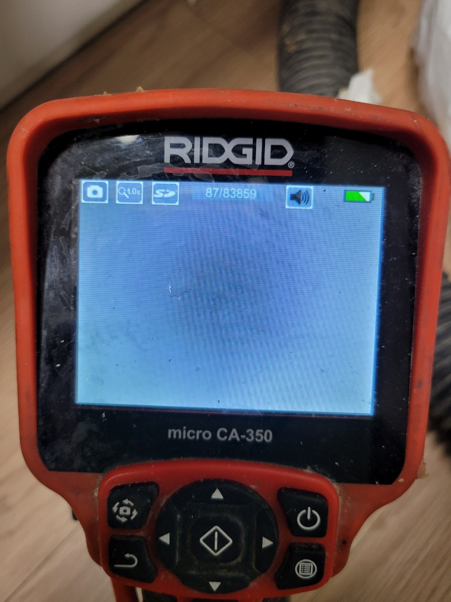
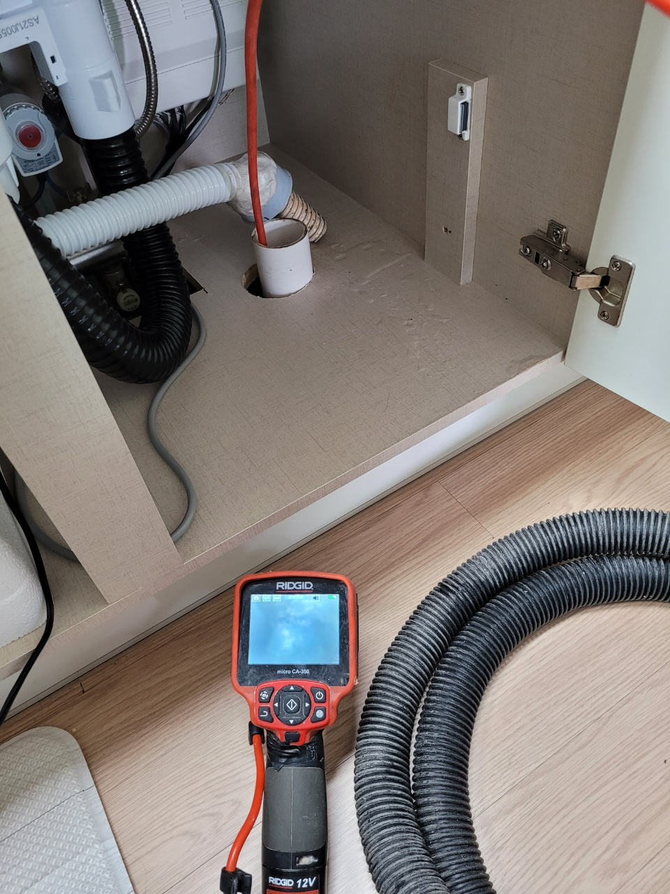
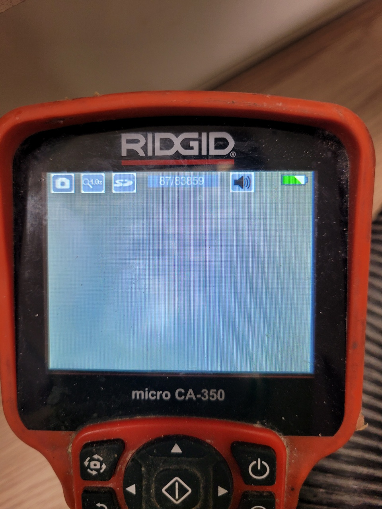
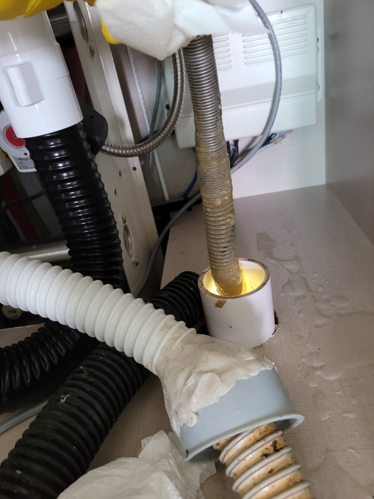
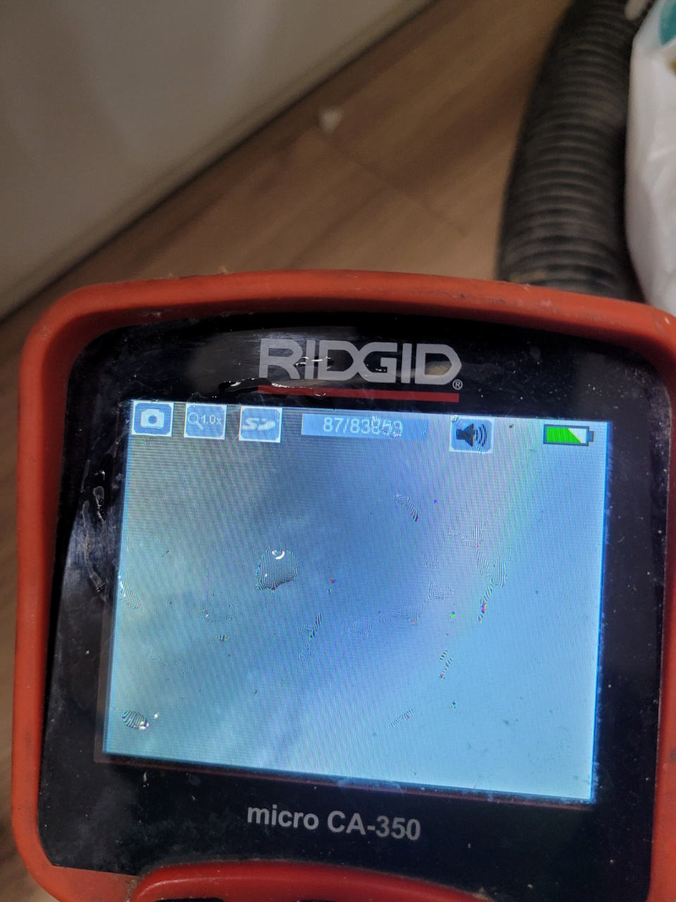

🏠 수지구 신봉동 싱크대 뚫음 고기리 하수구 막힘 시원하게 해결해 드려요
용인 신봉동 싱크대막힘 전문 시공 후기

📋 작업 개요
- 위치: 용인 신봉동, 신봉동, 용인
- 서비스 유형: 싱크대막힘, 하수구막힘, 배관막힘, 누수수리, 뚫는업체
- 작업 일시: 2022. 4. 15. 13:22
- 업체명: 하수구수사대 (010-5615-2118)
🔍 문제 상황
수지구 신봉동 싱크대 뚫음 고기리 하수구
일상생활을 하면서
너무나 중요하지만
그만큼 당연시되는 것들이 많아요.
그중 하나가 음식을 만들어 먹고
식기를 깨끗이 씻어
정리하는 공간인 싱크대입니다.
더불어 남은 음식물을
처리하는 공간이기도 하지요.
그런데 이 싱크대가
물을 흘려보내지 못하고
막혀버린다면 어떻게 될까요?
하수구 막힘은
많은 가정에서 빈번히 발생되는
일상의 불편함이기에
많은 문의를 주고 계십니다.
이번에 의뢰를 주신 고객님께서도
불현듯 찾아온 싱크대 막힘 현상으로
수지구 신봉동 싱크대 뚫음
고기리 하수구에 대해
많이 알아보시다가 당사를 믿고
작업을 맡겨주셨습니다.
고기리 하수구 작업에 앞서서,
가장 먼저 배수관의 내부 상태를
정확하게 파악하기 위해
저희 업체 전문 장비인

🔎 원인 분석
💡 전문가 진단: 하수구수사대최신장비보유!1년as 보장!주말,공휴일도 ok!010-2340-2118
배수구 전용 내시경으로
진단을 시작하였습니다.
이렇게 내시경으로 진단을 하게 되면
배수구 막힘 원인을 보다
잘 알 수 있을 뿐만 아니라
배수관 속 내부의 상태를
정밀하게 파악할 수 있지요.
싱크대 내부를 보시면
호스 쪽에서 누수가 일어났어요.
보통 하수구가 막히게 되면
일단은 혼자서 해결해 보려고
긴 막대기를 이용해서
배수관 깊숙이 집어넣어 보거나,
락스 같은 용액을 부어
해결하려 하시는 경우가 많습니다.
그렇지만 이러한 행동은
배수 호스나 배수관을 부식시켜
자칫 누수까지 이어질 수 있는
부분이기에 전문 업체에게
맡겨주시는 것이 가장
안전하고 확실한 방법입니다.
고기리 하수구를 내시경으로
진단해 본 결과 작은 이물질들과 함께
호스에 눅진하게 눌어붙은
기름들이 배수구 막힘의
주된 원인이었습니다.

🔧 작업 과정
조리 과정이나
음식물을 처리할 때에
기름은 당연히 배수구를 통해
흘러나가게 되는데,
이 기름들이 물과 만나
끈적해지고 배수관에
두텁게 쌓이며 결국에는
싱크대가 막히는 원인이 됩니다.
배수관 내부를 들여다보고
정확한 원인을 파악해
본격적으로 솔루션을 진행했어요.
이렇게 작업을 할 때에도
내시경으로 배수구를 봐가며
눌어붙은 기름때와 이물질들만
쏙쏙 제거하며 작업하고 있습니다.
따라서 싱크대 내부 호스나
배수관에 생길 수 있는
작은 스크래치조차 없기에
솔루션 후 혹시나 하는
누수 걱정은 하지 않으셔도 됩니다.
전문 장비를 이용해
하수구 막힘의 원인이었던
이물질들을 전문 장비로
깔끔히 제거한 모습입니다.
쉽게 막히지 않는
싱크대 사용법의 팁을 드리자면,
내부에 두텁게 쌓이는
기름때를 최소화하기 위해
기름이 많이 묻은 식기류는
키친타월로 닦아내고 설거지를 하시고,
최대한 음식물 찌꺼기들이
배수관으로 직접 들어가지 않도록
하는 것입니다.
고기리 하수구 솔루션이
다 진행되고 아주 시원하게
물이 내려가는 싱크대 모습을 보며
의뢰 주신 고객님께서도
매우 흡족해하셨어요.
이렇듯 물이 내려가는 모습까지
꼼꼼히 확인하면 비로소
모든 작업이 완료됩니다.
작지만 큰 불편함을


✅ 작업 완료
안겨주는 하수구 막힘은
용인 싱크대 막힘 뚫음,
용인 싱크대 설비 잘하는
슬기로운 하수구 생활로
문의하시길 바랍니다.
하수구수사대
최신장비보유!
1년as 보장!
주말,공휴일도 ok!
010-2340-2118
경기도 용인시 수지구 풍덕천로129번길 9 5층 590호




⚠️ 베란다 누수 및 방수 관리 방법
- ✅ 비가 많이 올 때 창틀 주변이나 아래층 천장에 얼룩이 생기는지 정기적으로 확인해 보세요.
- ✅ 우수관 주변 실리콘 마감이 들뜨거나 깨진 틈새가 있는지 손상 여부를 수시로 체크하세요.
- ✅ 베란다 바닥 타일의 줄눈(메지)이 소실되면 그 틈으로 물이 침투하여 누수가 유발됩니다.
- ✅ 누수 의심 증상 발견 시 방치하면 아래층 손실이 커지므로 즉시 전문가의 진단을 받으십시오.
💡 핵심 정리
- 확실한 장비 작업(내시경 점검 및 샤프트 스케일링)으로 원인을 뿌리 뽑습니다.
- 작업 후 1년 이내에 동일한 부위 재발 시 100% 무상 A/S 서비스를 보장합니다.
- 서울 · 경기 · 인천 전 지역에 24시간 언제든 긴급 출동할 수 있도록 항시 대기 중입니다.
❓ 자주 묻는 질문 (FAQ)
🚨 용인 신봉동 싱크대막힘 문제로 고민이신가요?
정확한 원인 진단과 확실한 시공으로 재발 없는 해결을 약속드립니다.
24시간 긴급 출동 | 서울 · 경기 · 인천 전지역 | 1년 내 재발 시 무상 A/S